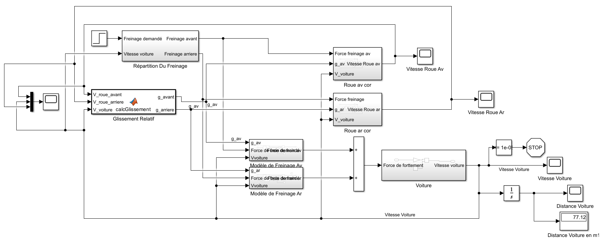
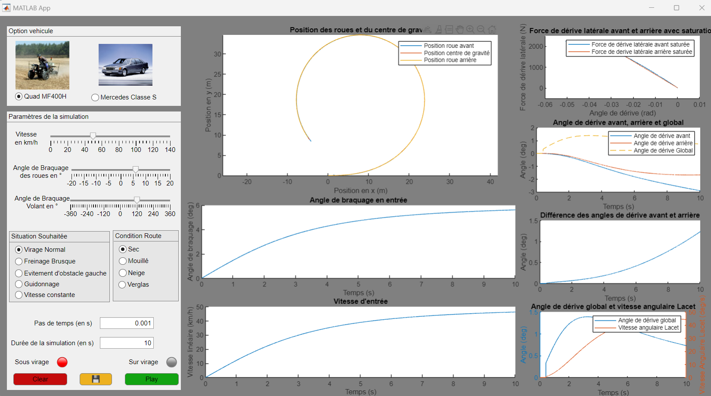
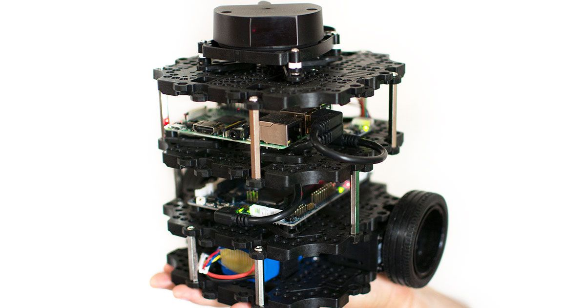
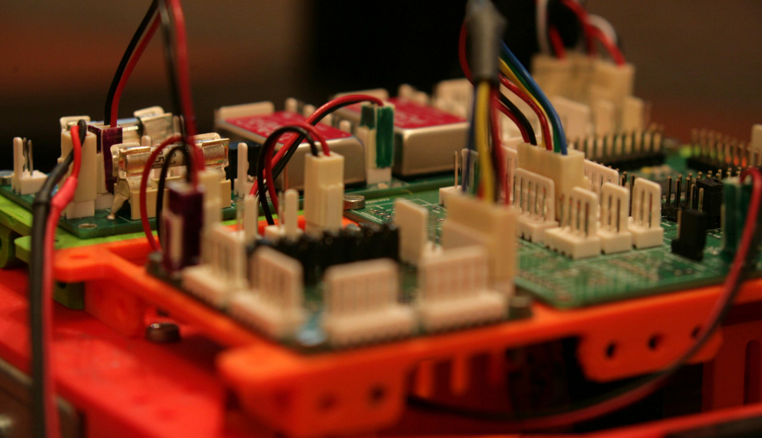
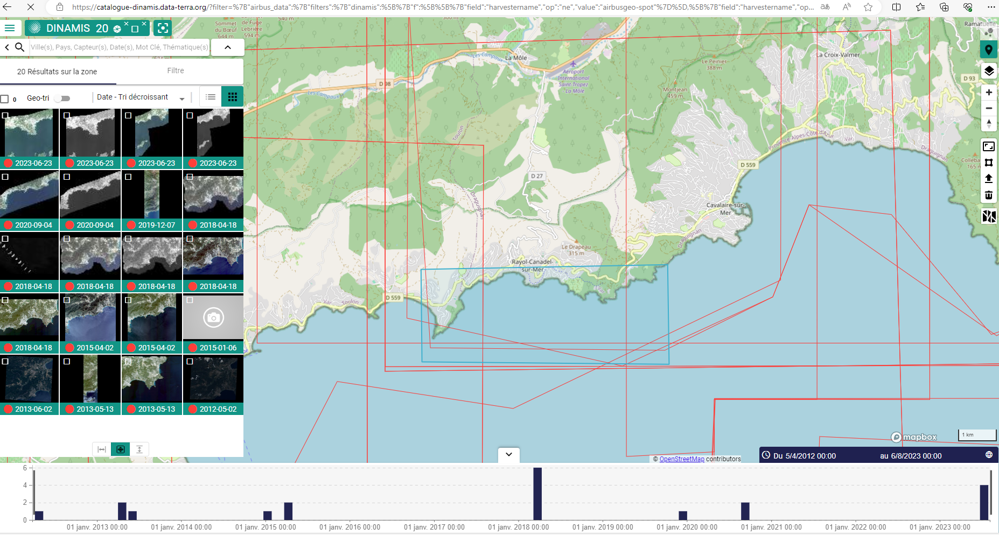

À propos de moi
Bonjour, je suis Enzo CHERIF, étudiant en ingénierie spécialisé en robotique, mécatronique, et systèmes embarqués. Passionné par l'innovation et la technologie, j'ai réalisé divers projets allant de la simulation automobile aux systèmes embarqués avancés. Ce site est une vitrine de mon parcours et de mes projets. N'hésitez pas à explorer et à me contacter pour toute question ou collaboration !
Projets
-
Dynamique des Véhicules : Modélisation et Simulation en Matlab/Simulink d'un Système de Freinage Avancé : ABS et EBD
Ce projet explore la modélisation d'un système de freinage automobile, en mettant l'accent sur les systèmes ABS (anti-blocage des roues) et EBD (répartition électronique de freinage). À travers des simulations et analyses détaillées, il vise à améliorer la sécurité et l'efficacité du freinage dans divers scénarios, tout en intégrant des solutions innovantes pour optimiser la stabilité et réduire la distance d'arrêt.
 -
Dynamique des Véhicules : Développement d'un simulateur MATLAB pour étudier la stabilité et le comportement dynamique des véhicules terrestres.
Ce projet comprend la modélisation cinématique et dynamique de véhicules tels qu'un quad MF400H et une Mercedes Classe S, l'étude de leur stabilité, et la création d'une interface graphique interactive pour la simulation.
 -
Traitement d'Image : Analyse en niveau de gris pour l'identification d'objets.
Ce projet illustre l'utilisation d'algorithmes de traitement d'image pour analyser et segmenter des objets à partir d'images en niveaux de gris. L'objectif était d'automatiser l'identification et le comptage d'objets grâce à des outils tels que Python et OpenCV.
.png)
-
Programmation sous ROS : Développement d'un robot mobile autonome avec détection d'obstacles.
Ce projet inclut la programmation d'un TurtleBot sous l'environnement ROS, permettant une navigation autonome et une détection avancée des obstacles.
 -
Systèmes embarqués : Développement d'un système de pilotage et supervision d'un robot mobile en C#.
Ce projet explore la conception et l’implémentation d’un système complet de supervision et pilotage d’un robot mobile, combinant programmation orientée objet en C#, communication série UART, et protocoles de communication embarqués. À travers une interface graphique intuitive et des tests sur microcontrôleurs, il met en avant des solutions robustes pour les systèmes embarqués.
 -
Cartographie Marine : Cartographie des fonds marins au Domaine du Rayol.
Ce projet, réalisé en collaboration avec Seatech, a permis de cartographier la posidonie grâce à l'imagerie satellite et aux données bathymétriques. Il met en avant des méthodes innovantes pour la conservation des écosystèmes marins et leur suivi à long terme.

Stage en Thaïlande - TFII, Bangkok
Lors de mon stage au Thai-French Innovation Institute (TFII), j'ai travaillé sur la gestion énergétique de véhicules électriques solaires. Voici un aperçu de mes travaux :
Mon parcours
Bac S - Option SI
Lycée [Nom du lycée]
2015 - 2018Classe Préparatoire PTSI/PT
Lycée [Nom du lycée]
2018 - 2020SeaTech - INP Toulon
Ingénierie en mécatronique et robotique
2020 - 2023Master RISE
Université de Toulon
2023 - 2025Compétences
.
Outils
MATLAB Simulink
Modélisation et simulation avancées
Git
Gestion de version pour projets collaboratifs
LaTeX
Création de documents techniques professionnels
Linux
Administration système et environnement de développement
SolidWorks
Modélisation 3D et simulation pour le design produit
Catia
Conception et modélisation de systèmes mécaniques
LabVIEW
Conception d'applications de mesure et d'automatisation
Python
Programmation pour l'analyse de données et les algorithmes
C/C++
Programmation embarquée et développement de logiciels
Excel
Analyse de données et automatisation de tableaux
ROS (Robot Operating System)
Contrôle et coordination de robots
Qualisys
Analyse de mouvements pour systèmes mécatroniques
Domaines
Robotique
Systèmes autonomes et contrôle
Mécatronique
Intégration mécanique et électronique
Systèmes embarqués
Conception matérielle et logicielle
Contact
Email : enzocherife@gmail.com